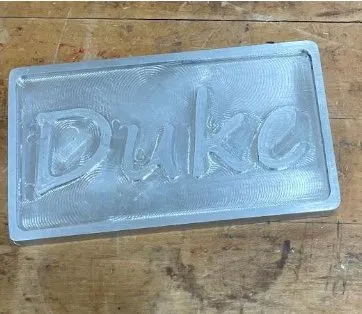
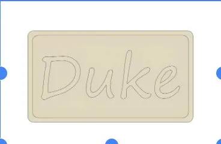
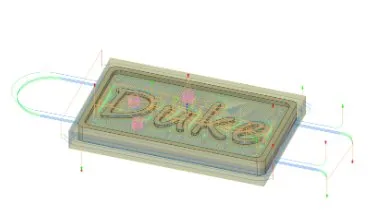

Duke Plaque
CTE Engineering Pathway: Pacific Grove High School
My Role
I did the CAD and CAM in Fusion 360 and engraved the Duke wordmark into aluminum on a Tormach 1100MX CNC mill.



CTE Engineering Pathway: Pacific Grove High School
I did the CAD and CAM in Fusion 360 and engraved the Duke wordmark into aluminum on a Tormach 1100MX CNC mill.


